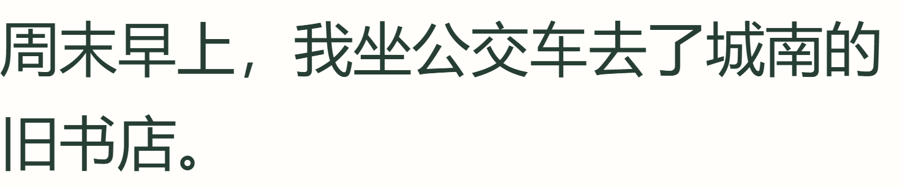
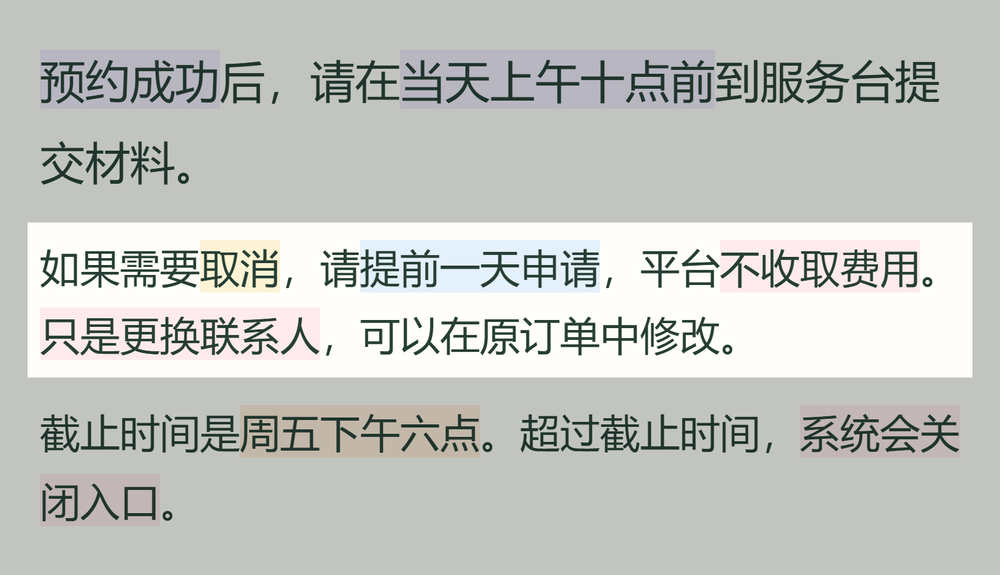
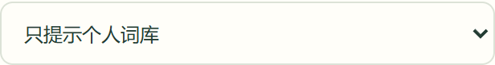

轻读 READING CUES中文网页阅读插件
01 / 词组标记这几个字，
一起读。
给网页里的部分词组加浅色标记。
看看这样读，是否更适合你。
原文

开启轻读

实际截图 · 默认底色 20% · 原文与换行不变
给网页里的部分词组加浅色标记。
看看这样读，是否更适合你。

实际截图 · 默认底色 20% · 原文与换行不变
把鼠标移到正在读的段落，
让周围区域变暗。

在“更多阅读辅助”中开启
默认关闭，用完可以随时关闭。
例如：只提示通知里的“截止时间”。



实际操作与截图 · 个人词语保存在本机
在电脑上的 Chrome / Edge 手动安装。
安装并授权后，普通网页自动标记。
选择解压目录，允许网站访问，再刷新网页。

扫码查看下载页
在电脑上完成安装